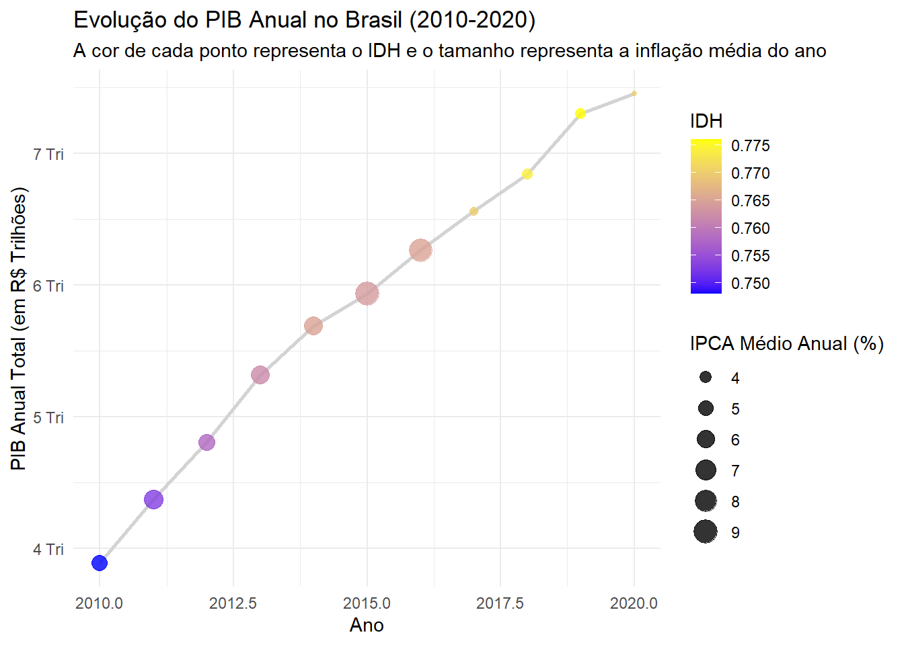
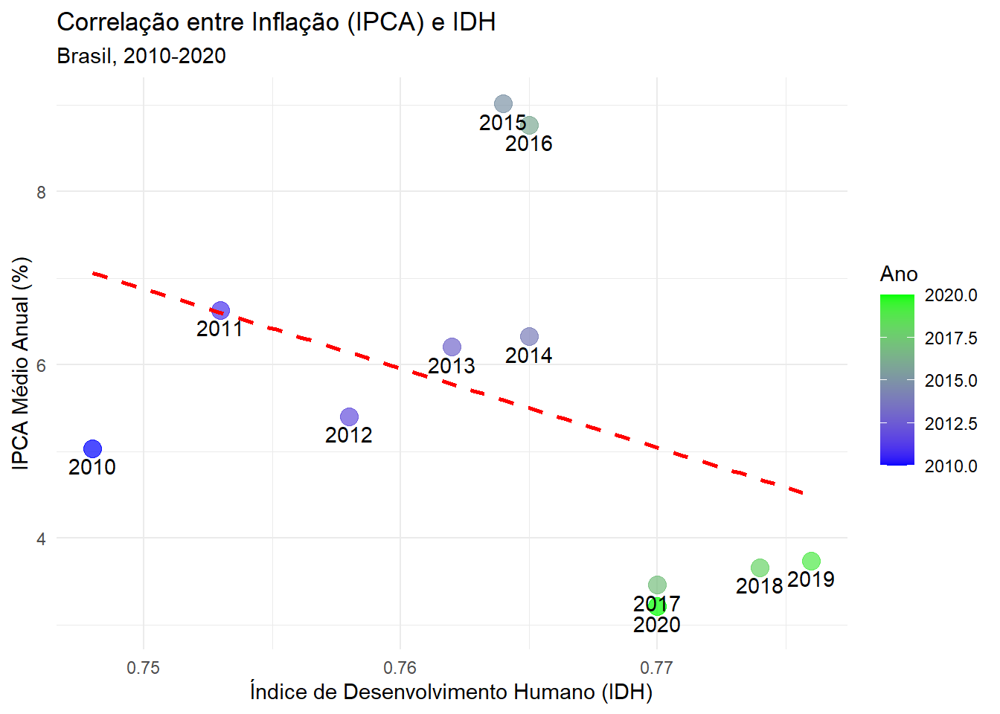
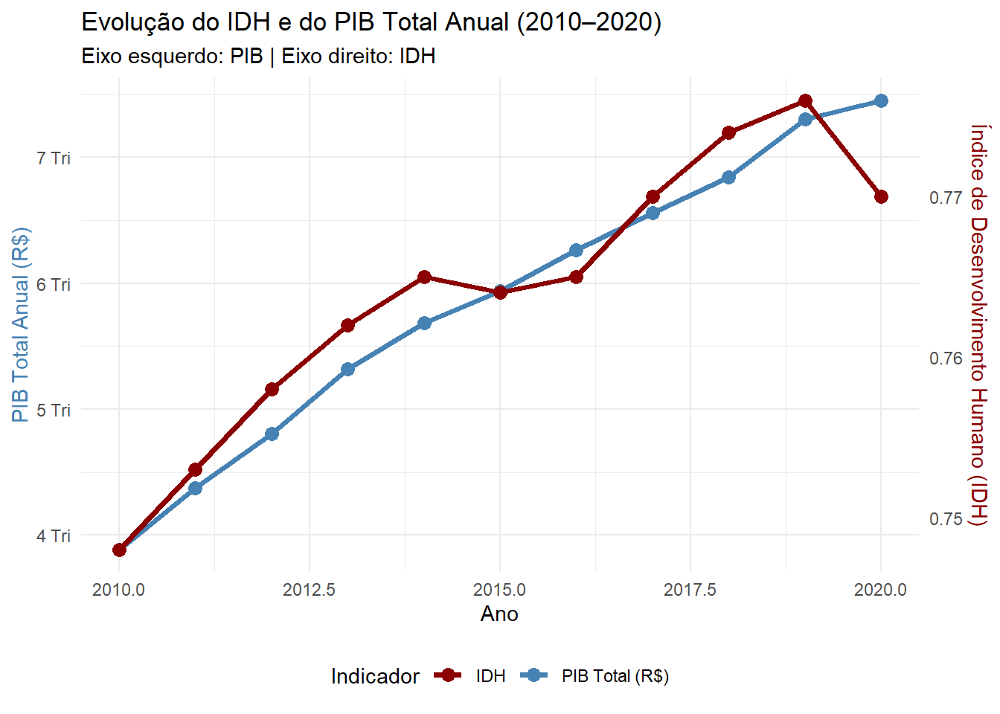

## Preparação e Limpeza dos Dados
# Nesta seção, carregamos as bibliotecas necessárias, lemos os três arquivos de dados e realizamos o processo de limpeza, filtragem e integração para criar uma base de dados anual coesa para o período de 2010 a 2020.
library(tidyverse)── Attaching core tidyverse packages ──────────────────────── tidyverse 2.0.0 ──
✔ dplyr 1.1.4 ✔ readr 2.1.5
✔ forcats 1.0.0 ✔ stringr 1.5.1
✔ ggplot2 3.5.2 ✔ tibble 3.3.0
✔ lubridate 1.9.4 ✔ tidyr 1.3.1
✔ purrr 1.1.0
── Conflicts ────────────────────────────────────────── tidyverse_conflicts() ──
✖ dplyr::filter() masks stats::filter()
✖ dplyr::lag() masks stats::lag()
ℹ Use the conflicted package (<http://conflicted.r-lib.org/>) to force all conflicts to become errorslibrary(readxl)
library(lubridate)
# Leitura dos arquivos de dados
df_pib_raw <- read_excel("H:\\Documentos\\FELIPE\\R\\ipeadata[04-10-2025-06-35].xls")
df_ipca_raw <- read_csv("H:\\Documentos\\FELIPE\\R\\ipeadata[04-10-2025-06-31].csv")Warning: One or more parsing issues, call `problems()` on your data frame for details,
e.g.:
dat <- vroom(...)
problems(dat)Rows: 537 Columns: 2
── Column specification ────────────────────────────────────────────────────────
Delimiter: ","
dbl (1): Data
num (1): IPCA
ℹ Use `spec()` to retrieve the full column specification for this data.
ℹ Specify the column types or set `show_col_types = FALSE` to quiet this message.df_idh_raw <- read_excel("H:\\Documentos\\FELIPE\\R\\ipeadata[04-10-2025-06-59].xls")
# Limpando o IPCA - mensal para anual
df_ipca_anual <- df_ipca_raw %>%
rename(ano_mes = Data, ipca_variacao = `IPCA`) %>%
mutate(ano = floor(ano_mes)) %>%
filter(ano >= 2010 & ano <= 2020) %>%
group_by(ano) %>%
summarise(ipca_medio_anual = mean(ipca_variacao, na.rm = TRUE))
# Limpando o PIB - mensal para anual
df_pib_anual <- df_pib_raw %>%
rename(ano_mes = Data, pib_valor_mensal = `PIB - R$ (milhões)`) %>%
mutate(ano_mes = as.numeric(ano_mes)) %>%
mutate(ano = floor(ano_mes)) %>%
filter(ano >= 2010 & ano <= 2020) %>%
group_by(ano) %>%
summarise(pib_total_anual = sum(pib_valor_mensal, na.rm = TRUE))
# Pivotando o IDH
df_idh_filtrado <- df_idh_raw %>%
pivot_longer(cols = matches("^20\\d{2}$"), names_to = "ano", values_to = "idh") %>%
mutate(ano = as.numeric(ano), idh = as.numeric(str_replace(idh, ",", "."))) %>%
select(ano, idh)
# Integração das bases de dados
df_final <- left_join(df_pib_anual, df_idh_filtrado, by = "ano")
df_final <- left_join(df_final, df_ipca_anual, by = "ano")
# Exibe a estrutura da tabela final
glimpse(df_final)Rows: 11
Columns: 4
$ ano <dbl> 2010, 2011, 2012, 2013, 2014, 2015, 2016, 2017, 2018,…
$ pib_total_anual <dbl> 3885847, 4373658, 4805913, 5316455, 5687309, 5936678,…
$ idh <dbl> 0.748, 0.753, 0.758, 0.762, 0.765, 0.764, 0.765, 0.77…
$ ipca_medio_anual <dbl> 5.036667, 6.632500, 5.404167, 6.206667, 6.325833, 9.0…## Análise e Visualizações
### Análise de Correlação Numérica
#Para quantificar a relação entre as variáveis, foi calculada uma matriz de correlação.
correlacoes <- df_final %>%
select(pib_total_anual, idh, ipca_medio_anual) %>%
cor(use = "complete.obs")
print("MATRIZ DE CORRELAÇÃO")[1] "MATRIZ DE CORRELAÇÃO"print(correlacoes) pib_total_anual idh ipca_medio_anual
pib_total_anual 1.0000000 0.9584209 -0.3768444
idh 0.9584209 1.0000000 -0.3855263
ipca_medio_anual -0.3768444 -0.3855263 1.0000000### Gráficos de Análise
# Gráfico de Evolução do PIB com contexto de IDH e IPCA
ggplot(df_final, aes(x = ano, y = pib_total_anual)) +
geom_line(color = "lightgray", linewidth = 1) +
geom_point(aes(color = idh, size = ipca_medio_anual), alpha = 0.8) +
scale_color_gradient(low = "blue", high = "yellow") +
scale_y_continuous(labels = scales::label_number(scale = 1e-6, suffix = " Tri")) +
labs(title = "Evolução do PIB Anual no Brasil (2010-2020)",
subtitle = "A cor de cada ponto representa o IDH e o tamanho representa a inflação média do ano",
x = "Ano", y = "PIB Anual Total (em R$ Trilhões)", color = "IDH",
size = "IPCA Médio Anual (%)") +
theme_minimal()
# Gráfico de Correlação IPCA vs. IDH
ggplot(df_final, aes(x = idh, y = ipca_medio_anual)) +
geom_point(aes(color = ano), size = 4, alpha = 0.7) +
geom_text(aes(label = ano), nudge_y = -0.2) +
geom_smooth(method = "lm", se = FALSE, color = "red", linetype = "dashed") +
scale_color_gradient(low = "blue", high = "green") +
labs(title = "Correlação entre Inflação (IPCA) e IDH",
subtitle = "Brasil, 2010-2020",
x = "Índice de Desenvolvimento Humano (IDH)",
y = "IPCA Médio Anual (%)",
color = "Ano") +
theme_minimal()`geom_smooth()` using formula = 'y ~ x'
# Gráfico de Evolução com Dois Eixos (PIB e IDH)
ggplot(df_final, aes(x = ano)) +
geom_line(aes(y = pib_total_anual, color = "PIB Total (R$)"), linewidth = 1.3) +
geom_point(aes(y = pib_total_anual, color = "PIB Total (R$)"), size = 3) +
geom_line(aes(y = (idh - min(idh)) / (max(idh) - min(idh)) * (max(pib_total_anual) - min(pib_total_anual)) + min(pib_total_anual),
color = "IDH"), linewidth = 1.3) +
geom_point(aes(y = (idh - min(idh)) / (max(idh) - min(idh)) * (max(pib_total_anual) - min(pib_total_anual)) + min(pib_total_anual),
color = "IDH"), size = 3) +
scale_y_continuous(
name = "PIB Total Anual (R$)",
labels = scales::label_number(scale = 1e-6, suffix = " Tri"),
sec.axis = sec_axis(
trans = ~ ((. - min(df_final$pib_total_anual)) / (max(df_final$pib_total_anual) - min(df_final$pib_total_anual))) * (max(df_final$idh) - min(df_final$idh)) + min(df_final$idh),
name = "Índice de Desenvolvimento Humano (IDH)"
)
) +
scale_color_manual(values = c("IDH" = "darkred", "PIB Total (R$)" = "steelblue")) +
labs(title = "Evolução do IDH e do PIB Total Anual (2010–2020)",
subtitle = "Eixo esquerdo: PIB | Eixo direito: IDH",
x = "Ano", color = "Indicador") +
theme_minimal() +
theme(
axis.title.y.left = element_text(color = "steelblue"),
axis.title.y.right = element_text(color = "darkred"),
legend.position = "bottom"
)Warning: The `trans` argument of `sec_axis()` is deprecated as of ggplot2 3.5.0.
ℹ Please use the `transform` argument instead.